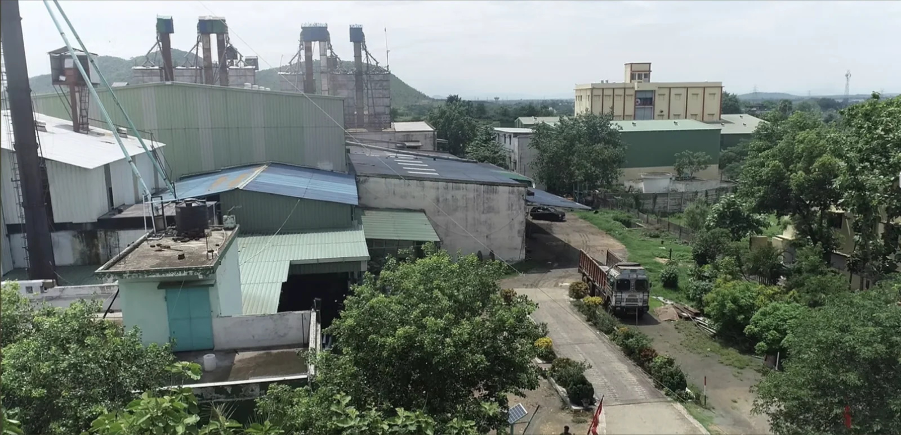

Everyday relevance
Keeping familiar rice and flour products at the centre of our work.
OUR COMPANY / OUR STORY
A rice milling journey that began in 2010.
A growing family of food essentials from Jharkhand.

A STORY OF GROWTH
Shree Balaji Agro Farm Private Limited began in 2010 with a rice milling plant in Jharkhand.
Rice remains an integral part of our identity. Our catalogue brings together Platinum, Gold and Silver rice under Shree Bhog, alongside Alcor Mansoori Rice.
In 2025, we opened a new chapter with atta, maida and sooji. This expansion brought more everyday staples into our range, serving both household and business enquiries.
OUR MANUFACTURING JOURNEY
Our Ranjitpur premises are home to the operations behind our rice and flour range. The factory is an important part of who we are: a food manufacturing business rooted in the region.
Rice millingOur original focus, and the foundation of our product family.
Flour productsChakki Atta, Premium Maida, Bakery Maida and Sooji.

FACTORY EXTERIOR & COURTYARDOUR REGIONAL PRESENCE
Our existing market presence spans Jharkhand, Odisha and West Bengal. We welcome conversations with retailers, wholesalers and distributors looking to work with our range.
Talk about distributionWHAT GUIDES US
Keeping familiar rice and flour products at the centre of our work.
Growing from our Jharkhand beginnings while serving neighbouring markets.
Welcoming direct conversations with the people and businesses who choose our products.
FOR RETAILERS, DISTRIBUTORS & WHOLESALERS
Bring Shree Bhog to your customers. Start a conversation with our team.